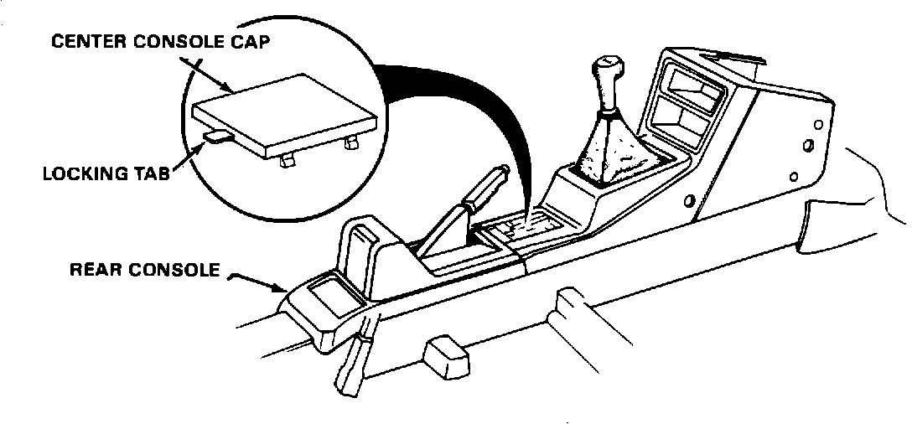

Center Console - Deformed Cover
88acura03November 14, 1988
YEAR 1986
MODEL INTEGRA
APPLICATION 3-dr LS up to -005864 5-dr LS up to -008704
87-006

Center Console Cap Deformed (Supersedes 87-006, dated April 6, 1987)
PROBLEM
Heat deforms the center console cap.
CORRECTIVE ACTION
Replace the center console cap and the rear console.
NOTE: The improved center console cap has a new locking tab; the improved rear console has a hole to accept this tab.
PARTS INFORMATION
Part Description Part Color Part Number
Console Cover B-49L Blue 77727-SD2-942ZB
Console Cover YR-89L Brown 77727-SD2-942ZC
Console Cover NH-83L Black 77727-SD2-942ZA
Console Cover NH-89L Gray 77727-SD2-942ZD
Rear Console B-49L Blue 77703-SB3-952ZB
Rear Console YR-89L Brown 77703-SB3-952ZC
Rear Console NH-83L Black 77703-SB3-952ZD
Rear Console NH-89L Gray 77703-SB3-952ZE
WARRANTY CLAIM INFORMATION
Operation Number: 841195
Flat rate time: 0.2 hour Failed part P/N: 77727 SD2-941ZA
Defect code: 004
Contention code: A01